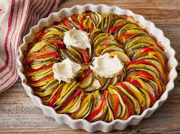

Liste des Recettes Françaises

Boeuf Bourguignon
Un ragoût de viande de boeuf cuit lentement avec du vin rouge, des oignons et des champignons.
Voir la recette

Ratatouille
Un plat de légumes mijotés, principalement des courgettes, aubergines et tomates, assaisonné d'herbes.
Voir la recette
Soupe à l'Oignon
Soupe délicieuse à base d'oignons caramélisés, de bouillon et de fromage gratiné.
Voir la recette
Coq au Vin
Poulet cuit dans du vin rouge avec des lardons, des champignons et des oignons.
Voir la recetteTarte Tatin
Une tarte aux pommes renversée, cuite avec du caramel pour une saveur riche.
Voir la recetteCrêpes
De fines galettes de pâte, servies sucrées ou salées, avec diverses garnitures.
Voir la recette